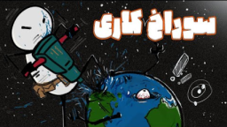

اگر تا هستهٔ زمین حفر کنیم و اقیانوس را داخلش بریزیم چه میشود؟

اگر وسط اقیانوس یک سوراخ بزرگ تا هستهٔ زمین بکنیم و همهٔ آبهای زمین را داخلش بریزیم، چه میشود؟
سؤال آنقدر عجیب است که اگر اینشتین زنده بود و این را میشنید، شاید دستپاچه به طرف صحرا میدوید. با این حال میشود آن را مثل یک آزمایش فکری جلو برد.
حفاری عظیم
از کف اقیانوس تا هستهٔ زمین باید حدود ۶۳۷۱ کیلومتر حفر کنیم. برای حس کردن این عمق، تصور کن حدود ۱۴۶۴۴ برج میلاد را روی هم بگذاری.
هرچه پایینتر برویم دما بالاتر میرود؛ تقریباً هر یک کیلومتر حدود ۲۵ درجه گرمتر میشود. در عمق ۴۰ کیلومتری به دمای ذوب بیشتر فلزها میرسیم. پس نوک مته باید از الماس مصنوعی خاصی باشد که تا حدود ۱۵۰۰ درجه دوام بیاورد.
تا همین دما و عمق، فشار چند هزار برابر فشار جو است. مته بیشتر از این را تحمل نمیکند و هنوز چنین الماسی ساخته نشده است.
تازه اینها فقط مشکلات اول کارند. فشار و گرما هر متر بیشتر میشود. سنگها حالت خمیری پیدا میکنند و دیوارههای چاه مدام میخواهند فرو بریزند.
با چه چیزی طرفیم؟
با همهٔ این سختیها فرض کنیم تا هسته را حفر کردیم. حجم کل آبهای زمین حدود ۱٫۳۸۶ میلیارد کیلومتر مکعب است. دمای هسته حدود ۵۴۰۰ درجه سانتیگراد است؛ نزدیک ۵۰ برابر داغتر از فر خانه. فشار هسته حدود ۳۶۴ گیگاپاسکال است؛ نزدیک سه و نیم میلیون برابر فشار هوا در سطح دریا.
بخار شدن فوری
تا حالا آب را روی ماهیتابه داغ ریختهای؟ همان واکنش را در یک تریلیون ضرب کن. همان لحظهای که آب به هسته برسد، بهخاطر دما و فشار بالا سریع بخار میشود.
با قانون گازها، هر لیتر آب میتواند تقریباً به ۱۷۰۰ لیتر بخار فوقداغ تبدیل شود. یک بطری آب را تصور کن که به ابر بخاری به اندازهٔ یک خانه تبدیل شود؛ آن هم در چند صدم ثانیه.
واکنش شیمیایی
هسته فقط داغ نیست؛ بیشتر از آهن و نیکل ساخته شده است. وقتی آب به آهن مذاب برسد، واکنش شیمیایی رخ میدهد. به زبان ساده محصولها تقریباً اینها هستند: زنگ آهن فوقداغ مثل Fe₃O₄ و گاز هیدروژن H₂ که خیلی آتشگیر است.
سیارهای مثل زودپز
هرچه آب بیشتری وارد شود، فشار بهصورت تصاعدی بالا میرود. زمین شبیه بزرگترین زودپز دنیا میشود؛ البته بدون سوپاپ اطمینان.
فشار هسته بهخاطر انبساط بخار، جمع شدن هیدروژن و واکنشهایی که گاز بیشتری میسازند خیلی بیشتر میشود. این فشار میتواند فورانهای آتشفشانی بیسابقه را تقریباً همزمان در سراسر سیاره راه بیندازد، زمینلرزههای بسیار بزرگ بسازد و حتی صفحات زمینساخت را جابهجا کند تا شکافهای بزرگ در قارهها باز شود.
بخار و هیدروژن باید جایی بروند
نوشابهای را خیلی محکم تکان بده؛ وقتی درش را باز کنی گاز از هر جا که بتواند میزند بیرون. همین داستان را برای زمین تصور کن؛ میلیونها برابر قویتر.
این بخار و هیدروژن از سنگهای اطراف سبکترند و فشارشان آنقدر زیاد است که پوسته را مثل پوست تخمه میشکافند. اول از آتشفشانها میآیند بالا، بعد از شکافهای کف اقیانوس، و کمکم از هر ترکی که پیدا کنند. زمین تبدیل میشود به آبکشی غولپیکر که از سوراخهایش بخار و هیدروژن میزند بیرون.
آخر کار
در پایان زمین شبیه چیزی میشود که اخترشناسها به آن سیارهٔ بخار میگویند؛ یک نسخهٔ خیلی مرطوب و خشن از سیارهٔ ونوس. دیگر خبری از سیارهٔ آبی آشنا نیست و به جایش یک سونای کیهانی از کنترل خارجشده میماند.
این بود سناریوی سوراخ کردن زمین و ریختن همهٔ اقیانوسها در آن. ایدههای عجیب گاهی بهانهٔ خوبیاند تا گرما، فشار و واکنش شیمیایی را بهتر بفهمیم. تا فکر بعدی، کنجکاو بمان.